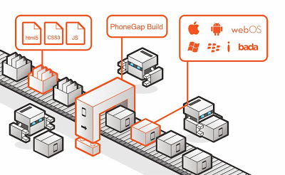

PhoneGap
O PhoneGap é uma distribuição do Apache Cordova. O Cordova foi originalmente criado pela Nitobi, que foi então adquirida pela Adobe em 2011. O projeto foi doado para a Apache Software Foundation (ASF) ainda no mesmo ano para manter uma transparente e aberta governança e prover um mecanismo para que outras grandes organizações contribuissem. Apache Cordova é o motor que torna poderoso o Adobe PhoneGap. O PgoneGap adicionou serviços e funcionalidades que o Cordova não tem, como PhoneGap Developer App, the PhoneGap Desktop App, PhoneGap Build e PhoneGap Enterprise..
O Phonegap traz um bom conjunto de ferrametnas para a construção de aplicativos mobile híbridos, com suporte a Android, iOS, Blackberry e Windows Phone.
É um projeto open source, baseado no Cordova e nos oferece um framework, com interface de linha de comando (Linux, Windows e Mac) contendo todos os seus principais recursos, um aplicativo desktop para Windows e Mac, que cria e executa aplicativos.
Com o PhoneGap a instalação e configuração do Android fica apenas no seu servidor nas nuvens, que realiza o build para nós. Assim a criação de apps fica muito simplificada.
Com apenas um único código de app podemos criar aplicativos para as várias plataformas. Podemos pegar sites ou aplicativos web existentes e adaptar para que funcionem em dispositivos móveis.
A exigência para criar aplicativos no Phonegap é conhecer HTML, CSS e JavaScript.
Através dos plugins do Phonegap podemos acessar os recursos do hardware dos dispositivos móveis como: Accelerometer, camera, compass, contacts, geolocation, notification (alert / sound / vibration, storage, media e network), etc. Nem todos disponíveis para todas as plataformas, para isso precisamos consultar a documentação do plugin no site do Phonegap:
http://docs.phonegap.com/references/plugin-apis/
Algumas seções do Site
http://phonegap.com
http://build.phonegap.com
http://docs.phonegap.com/
http://docs.phonegap.com/references/phonegap-cli/
http://docs.phonegap.com/references/phonegap-cli/install/
http://docs.phonegap.com/phonegap-build/
https://phonegap.com/app/
http://docs.phonegap.com/references/developer-app/
http://configap.com/
Requisitos:
nodejs - https://nodejs.org/en/
Requisitos de conhecimento
Precisamos conhecer apenas HTML, CSS e Javascript e os comandos do PhoneGap.
Roteiro Resumido para a criação completa de uma app
Nno Linux e no Windows
Instalar o PhoneGap no Linux (Debian e derivadas)
curl -sL https://deb.nodesource.com/setup_6.x | sudo -E bash -
sudo apt-get install -y nodejs
sudo npm install -g cordova phonegap
Instalar o PhoneGap no Windows
Download - https://nodejs.org
Instale e execute no prompt
npm install -g cordova phonegap
Criação do app (semelhante para ambos os SOs)
cd /var/www/html
phonegap create aplicativo1 org.ribafs.aplicativo1 Aplicativo1
cd aplicativo1 (este é um helloworld do Phonegap)
Edite o aplicativo gerado, na pasta aplicativo1/www e abra no navegador:
http://localhost/aplicativo1
Acessar o site http://build.phonegap.com e criar uma conta
Edite o arquivo aplicativo1/config.xml e faça os devidos ajustes. Depois precisa substituir os ícones e splash screens, nas pastas
aplicativo1/www/res/icon e aplicativo1/www/res/screen. Veja:
http://docs.phonegap.com/en/4.0.0/config_ref_images.md.html
https://ionicframework.com/docs/cli/cordova/resources/
Após concluir o aplicativo e estiver do jeito que deseja, vamos fazer o build
phonegap login
phonegap remote build android
Gerar a chave
keytool -genkey -v -keystore Aplicativo1.keystore -alias aplicativo1 -keyalg RSA -keysize 2048 -validity 10000
Agora já podemos acessar o site do build, associar o app à chave gerada, desbloquear e baixar o APK e o APPX.

Detalhes sobre o PhoneGap
Instalação do PhoneGap Desktop App
Phonegap Desktop App
https://github.com/phonegap/phonegap-app-desktop/releases
Windows 7 e 8.1 usar a versão 0.3.5
Windows 10 suporta a última versão, que é a 0.4.4
O phonegap cria aplicativos localmente e gera o build na nuvel (build.phonegap.com), sem necessidade de instalar o Android localmente.
Este site é um serviço nas nuvens que armazena os build que criamos dos aplicativos.
Isso torna a criação de aplicativos mobile muito mais simples, sem necessidade da trabalheira de instalar e configurar o android localmente.
O Phonegap tem uma interface para a linha de comando para Linux, Windows e Mac e uma IDE somente para Windows e Mac mas apenas com recursos de criação e execução no navegador e diversos outros recursos em seu site.
Instalar o Phonegap
npm install -g phonegap
Criar um aplicativo (requer conexão à internet, pois baixa o esqueleto do servidor)
phonegap create agenda org.ribafs.agenda Agenda
Outras variações
phonegap create path/to/myApp
phonegap create path/to/myApp "com.example.app" "My App"
phonegap create path/to/myApp --id "com.example.app" --name "My App"
phonegap create path/to/myApp --template hello-world
phonegap create path/to/myApp --copy-from ../myOtherApp
phonegap create path/to/myApp -src ../myOtherApp
phonegap create path/to/myApp --id "com.example.app" --name "My App" --copy-from ~/myOtherApp
phonegap create path/to/myApp --link-to ../myOtherApp
phonegap create pasta pacote NomeApp
phonegap create hello org.ribafs.hello HelloWorld
phonegap create agenda org.ribafs.agenda Agenda
Estrutura de diretórios
hooks - scripts adicionais
platforms - código do build de plataformas
plugins - código dos plugins usados
www - código fonte da app
config.xml -
Cadastrar-se em
https://build.phonegap.com/
Emulador para Chrome
http://emulate.phonegap.com
Acesse e instale no chrome (somente).
Instalar servidor web (para criar aplicativo com PhoneGap com PHP e MySQL)
http://localhost/app1
Build remoto
https://build.phonegap.com/apps
cd app1
phonegap remote login
phonegap remote build android
Emulando com Celular
ou (com celular conectado via cabo USB e usando a app do PhoneGap)
Também devemos habilitar o modo de debug no celular Android
phonegap run android --verbose
phonegap remote run android
phonegap run android --device=<codigo>
Ver os códigos dos dispositivos conectados ao computador
adb devices
Após o deploy podemos instalar o aplicativo nos dispositivos reais.
Basta acessar o site build, baixar o apk e instalar manualmente no aparelho.
Podemos baixá-la via QRCode (mais prático).
Também podemos compactar toda a pasta do app e fazer o upload no site build.
Em Private - Upload a zip file.
Para excluir um app clicar no ícone - Settings e ao final Delete.
Após excluir requer Refresh no navegador para permitir upload de nova app.
Download do apk
No site build clique sobre o ícone da aplicação
Abaixo aparece um ícone azul para download do APK
Talbém aparece um botão Install abaixo do QRcode onde podemos baixar o APK
No site build podemos efetuar alterações nas configurações e depois clicar no botão Build para atualizar
Gerando uma keystore
keytool -genkey -v -keystore [keystore_name].keystore -alias [alias_name] -keyalg RSA -keysize 2048 -validity 10000
Exemplo
keytool -genkey -v -keystore Agenda.keystore -alias agenda -keyalg RSA -keysize 2048 -validity 10000
Emulando no celular, via app
Para que funcione precisamos instalar um acelerador gráfico via sdkmanager
android-studio/bin/studio.sh
Configurações/SDK
Sdk/Extras, o último da lista
Intel x86 Emulator Accelerator
phonegap emulate android
phonegap remote logout
Existe um app emulador
http://docs.phonegap.com/references/developer-app/ ou buscando phonegap pelo celular
Testar aplicativos em emulador
phonegap serve [options] (no windows desabilitar o firewall ou permitir este)
--port, -p <n> port for web server (default: 3000)
--autoreload enable app refresh on file changes (default: true)
--no-autoreload disable app refresh on file changes
--browser enable desktop browser support (default: true)
--no-browser disable desktop browser support
--localtunnel enable a local tunnel for public access (default: false)
Após abrir o aplicativo apenas execute:
cd pastaapp
phonegap serve
As alterações fetias no código fonte no computador são percebidas automaticamente no app do celular
Ambos, celular e computador devem estar na mesma rede
Neste caso o app aparece no celular.
Vídeo aulas sobre Cadastro de Clientes
https://www.youtube.com/watch?v=CgidH4qFxiM&index=1&list=PLTmK6lyvWo8g3v40gJADMdUUTt8p2t5G3
Listar plataformas disponíveis
phonegap platform
Adicionar suporte para a plataforma android
phonegap platform add android
Com isso ele cria uma pasta com o projeto na nossa pasta platform. Este projeto criado pode ser importado pelo Android Studio.
App Controle de Estoque
https://www.youtube.com/watch?v=XHOh0F9HLKo&index=15&list=PLTmK6lyvWo8g3v40gJADMdUUTt8p2t5G3
Emulador do Blackberry no navegador - Ripple
sudo npm install -g ripple-emulator
https://chrome.google.com/webstore/detail/ripple-emulator-beta/geelfhphabnejjhdalkjhgipohgpdnoc
ripple emulate
Para que funcione requer adição do android como plataforma
phonegap platform add android
Debugando com Gapdebug (Win e Mac)
http://genuitec.com/products/gapdebug
Debugar no navegador de aplicativo no celular
Plugin Bateria
Instalar Phonegap
Criar o app
Instalar plugin
phonegap create bateria org.ribafs.bateria StatusBateria
Ver documentação no site do cordova
https://cordova.apache.org/docs/en/latest/reference/cordova-plugin-battery-status/index.html
Atualizar o cordova
sudo npm install -g cordova
Instalar o plugin
cordova plugin add cordova-plugin-battery-status
Ao instalar ele cria uma pasta com os fontes para cada uma das plataformas suportadas.
Mudar o início da tag <body> em www/index.html para:
<body>
<div class="app">
<h1>Exemplo Plugin Bateria</h1>
<div id="deviceready" class="blink">
<p>Porcentagem Bateria<span id="level">%</span></p>
<p>Dispositivo plugado<span id="isPluged"></span></p>
</div>
</div>
Em js/index.js
Mudar este evento:
receivedEvent: function(id) {
window.addEventListener("batterystatus", onBatteryStatus, false);
function onBatteryStatus(status) {
console.log("Level: " + status.level + " isPlugged: " + status.isPlugged);
}
}
Testando este app. O teste só irá funcionar bem em aparelhos reais de celular ou tablet.
Lembrando: este evento somente é disparado quando o estado da bateria muda ou quando o isPlugged muda, portanto a melhor alternativa é o ripple.
Lembrando que para que o ripple funcione requer que o android seja adicionado ao app.
phonegap platform add android
Também precisa estar no diretório web.
Plugin Device
Acessar informações sobre o aparelho: SO, versão, versão do cordova, marca, etc.
https://cordova.apache.org/docs/en/latest/reference/cordova-plugin-device/index.html
App
phonegap create device org.ribafs.device DevicePlugin
Instalação
cordova plugin add cordova-plugin-device
O objeto do plugin device tem escopo global e pode ser chamado de qualquer parte do app.
Plugin Dialogs
Recomendado para todas as aplicações.
https://cordova.apache.org/docs/en/latest/reference/cordova-plugin-dialogs/index.html
App
phonegap create dialogos org.ribafs.dialogos PluginDialogs
Instalar
cordova plugin add cordova-plugin-dialogs
Obs.: estes exemplos com plugins não funcionam no navegador, nem no emulador ripple, somente no dispositivo real.
jQuery Mobile para a camada view
Podemos criar um app ou um site e fornecer a URL para o cliente.
Templates do Phonegap
phonegap template list
phonegap create dialogos org.ribafs.dialogos PluginDialogs --template nometemplate
Criar app usando template jquerymobile
phonegap create my-app --template URL
phonegap create my-app --template https://github.com/loiane/jquerymobile-phonegap-template (para isso requer git instalado na máquina)
Publicar uma app do Android no build para o Google Play
Criar a app
Criar a chave com:
cd appname
Efetuar o build pela linha de comando
keytool -genkey -v -keystore Agenda.keystore -alias agenda -keyalg RSA -keysize 2048 -validity 10000
Gerará o arquivo Agenda.keystore no raiz do aplicativo
Dica: use a mesma senha no começo e no final para facilitar.
Ir até o site do build - https://build.phonegap.com
- Clicar no ícone do app
- Clicar em No key selected à direita do ícone do android abaixo
- Clicar em add a key...
Entrar com um nome para o aplicativo: DNOCS - Agenda
Entrar com o alias usado na criação da chave. Precisa ser o mesmo da chave: agenda
Indicar o arquivo da chave, que é Agenda.keystore, na pasta do app agenda
Clicar no pequeno cadeado amarelo (indica que está bloqueado)
Clicar no botão Rebuild e aguarde que reconstrua com a chave
Agora está pronto para publicar no Google Play - https://play.google.com/apps/publish
Ao efetuar o build de uma app ele aparece no site do build.phonegap.com como de debug.
Mesmo assim este APK pode ser instalado manualmente sem problema. Não dá é para publicar no Google Play. Para isso precisa da chave.
Dica: esta chave/arquivo pode ser usado para outros aplicativos.
Bom Curso Gratuito com Certificado sobre Phonegap
http://loiane.training/curso/phonegap-apache-cordova/
Comments fornecido por CComment